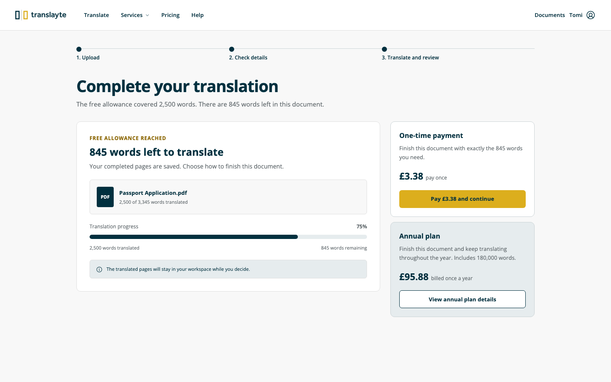
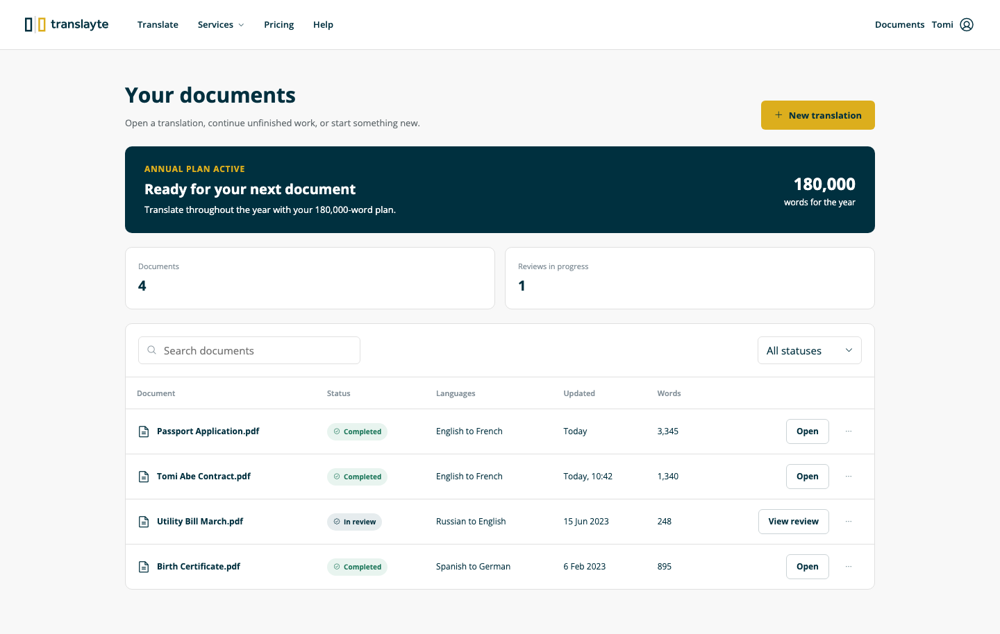

Translayte Designing for the second translation order.
A new entry point let customers begin with a useful translation, understand when to pay for more, and find their work when the next document arrived.

The brief
A translation should lead somewhere.
Translayte had an established paid service for professional and certified translation. The product needed a lower commitment way to begin, and a clear reason to return after the first job.
Working with the product team and leadership, I shaped a free document translation entry point that connected first use with paid capacity, human expertise and a saved workspace. The design challenge was to make those transitions useful to the customer.
How could a first translation become the beginning of an ongoing relationship?
The model
Make first value the entry point.
The free translation was a starting experience. Paid choices appeared when a document, a limit or a future task gave them context.
- Entry
Start with a document
A useful translation lets customers experience the service before choosing a paid level of help.
- Continue
Pay for the need
A word top-up, recurring plan or human review solves a specific need when it becomes clear.
- Return
Keep work in reach
Saved documents, credits and status give repeat customers a place to resume and start again.
First value
A useful quote before an account.
The entry flow begins with the customer’s document. File guidance, language selection and word count establish what the service can do before registration adds friction.
Show what has been understood about the document before asking the customer to commit.
The decision
The limit is a fork, not a dead end.
At the word limit, the interface keeps completed progress visible and gives two distinct choices: pay for the rest of this document or consider recurring capacity. The customer can compare without starting over.
The recurring plan earns its place when future translation needs are plausible.
845 words left to translate
The first 2,500 words are complete. The translated pages stay saved while you decide.
One-time payment
Pay only for the 845 remaining words and finish this document.
£3.38 pay onceSelect either option to inspect the decision.
Confidence
Human expertise at the right moment.
A translation result is useful on its own. When the document is more consequential, the customer can add proofreading or a deeper review with a clear explanation of what that service contributes.
Let the document’s purpose explain the upgrade.
Return
A workspace makes the next order easier.
A completed translation becomes part of a longer relationship when people can find documents, check status and understand what capacity remains. The next job starts from a familiar place.

What changed
The first order was no longer the whole story.
The engagement connected acquisition, paid continuation and return use in one product journey.
The work introduced free document translation as a useful starting point, clearer choices for additional words and human review, and a workspace that supported subsequent tasks. That made a subscription model relevant to repeat customers without asking every first-time customer to subscribe.
Begin with a useful translation
Pay for capacity or confidence
Find work and start again